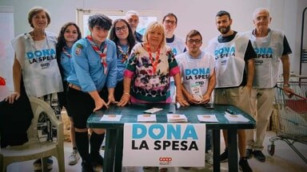
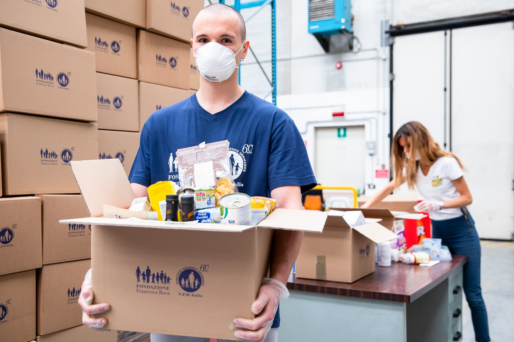
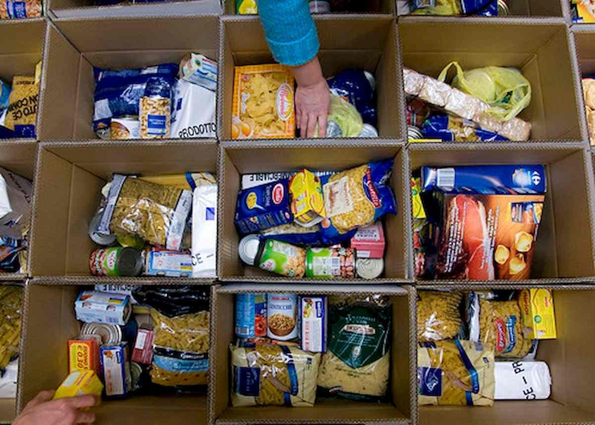

L’idea
Organizzare una dispensa gestita da volontari: raccolta di cibo da negozi e mercati, distribuzione settimanale in modo discreto e collaborazione con le associazioni che già operano in città.
Le attività previste
- Raccolta degli alimenti Accordi con negozi, mercati e cittadini per donare prodotti freschi e a lunga conservazione.
- Distribuzione settimanale Turni di volontari per preparare e consegnare le borse in uno spazio riservato.
- Rete con il territorio Collaborazione con associazioni di solidarietà per segnalazioni e formazione dei volontari.
- Attenzione alla dignità Accesso semplice, senza domande invasive, nel rispetto della privacy.
Galleria fotografica
Immagini illustrative del tema del progetto.


